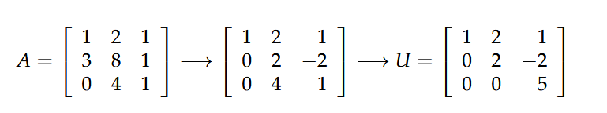
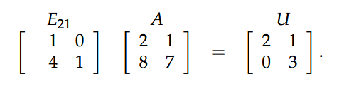
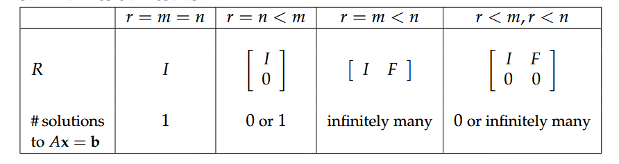
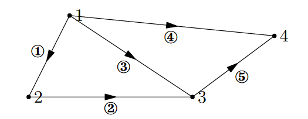

初次看的时候，这一部分的笔记没有做，这次复习博客，这一部分也没有记录，现在将这一部分补上，整个课程的笔记终于全了。
虽然这篇是后补的，为了看的时候方便，将时间调到最前边。
Ax=b
1 | 2x - y = 0 |
row picture
以行的角度来看Ax=b就是两个等式，画出的图像如下图所示。column picture
以列的角度来看，可以将等式转化成：，画出的图像为：
由此，成功的引入的向量。
- matrix picture
进一步，引入等式的矩阵形式：
矩阵形式其实包括了row的角度与column的角度，在整个课程中，Strange老师习惯于使用column形式，感觉更矩阵化。
Elimination消元法
消元法是从行向量来看的，并且可以把消元的过程用permutation矩阵乘积的方式表达出来
消元法
Ax = b，其中A与b为：
利用行向量变化来转换A与b：

同样的变化发生在b上：
由此可求解x为[2, 1, -2]主元pivot
U的行列式等于主元元素的乘积。
主元不能为0，如果0在主元位置，需要交换一个非零的行。若没有零元素了，那么A是奇异的，是不可逆的矩阵乘积与消元
![矩阵乘积与消元])(矩阵乘积与消元.png)
从矩阵row角度去看，左侧表示第二行的变换，row2 - 3*row1 得到右侧矩阵消元法与permutation(交换矩阵)
如果存在pivot位置上存在0值，会用到交换，这时候就需要permutation:
表示交换第1，2行elimination逆操作
elimination一定是可逆的操作，由后一个矩阵通过逆操作可以变化成前一个矩阵。对于
其逆操作（逆矩阵）为：
消元法的空间复杂度
矩阵乘法与逆
矩阵乘法
前文已经接触过2种矩阵的乘法了，row角度与column角度，不过都是矩阵与向量的方式在呈现，这里做引申：column
对与 AB = C，C的第j列可以看作A与B的第j列的乘积，也就是以Bj的为参数来组合Arow
同样 AB = C，C的第i行可以看作Ai与B的乘积，以Ai来结合B的各行。每个元素
扩展
可以将矩阵乘法扩展到块上，每个块也符合矩阵乘法
逆:inverse
有了乘法自然就有了逆，就像有了乘法就有了倒数一个道理。
逆是对方阵而言，左逆、右逆才是对川型阵与三型阵而言。
A-1A = I = AA-1有了逆的概念也就引出了奇异的概念首先，矩阵有逆，说明用它做线性变换，可以反变换回来，它在自己的满秩空间中是完全的，其行列式为非0值。
Gauss-Jordan消元法求逆
就是一个小trick，将A与I一起做elimination，当A变成I时，I也就变成A-1
A=LU分解
示例
LU分解是从eliminate与inverse概念中产生的：

由此，得出A可以分成一个下三角矩阵L与上三角矩阵U乘积
小推导
由eliminate得，E32E31E21A = U，然后通过逆矩阵：A=E21-1E31-1E32-1U = LU
每一个Eij都是一个下三角矩阵，其乘积也是L用处
这里我觉得少点A=LU的应用，或者叫why factorization A into LU
几个概念
permutation：置换，或者叫变换
P-1 = PT，即PTP = Itranspose: 转置，颠倒
向量空间
向量空间对于线性操作是闭合的，其中线性操作指的是加法与数乘，闭合指的是对向量做线性操作后的向量还在原空间中。aV+bW
子空间
子空间指的是被包含在另一个空间里的空间，子空间是闭合的，要想闭合，必须包括零向量，分析一下R3的子空间：- 所有的R3
- 所有穿越原点的平面
- 所有穿越原点的线
原点(zero vector)本身
由此可以引申出columnspace了，对于任意向量A，它的列向量可以形成一个子空间。
columnspace
column space
column space指的是A的各列通过线性组合形成的空间。Ax = b
从列角度看，b是A各列的一种结合，反过来，b在什么情况下，Ax=b有解。答案是b在A的列空间内。
nullspace与求解Ax=0
- 定义
null space 是Ax = 0 所有解形成的空间。
它满足A(x1 + x2) = Ax1 + Ax2 = 0; A(cx) = cAx = 0
有null space说明 A个各列组合可以变成0，也就是A并不是满秩的，它的各列有依赖。
计算
计算A的nullsapce
A:首先对A进行消元，nullspace向量的个数等于自由列（非主元列）的个数
其中可以看到第2列与第4列是自由列，分别假设x2=1,x4=0; x2=0,x4=1，求解得两个向量：
更进一步：
求解Ax = b
有了Ax = 0 的解，就可以对Ax = b进行求解，Ax = b的求解是先求特解，再加上nullspace即可
同样对于上文的示例 A: ， b:
特解
x1 + 2x3 = 12x3 = 3这样：x1=-2, x3=3/2 ，特解：
解
上文求出了nullspace，这样解为：Ax=b解分析

无关、基、维度
线性无关
前文一直在用满秩、行列式不为0等描述线性无关，这里对线程无关进行定义：
如果c1x1 + c2x2 + cnxn，仅当c1,c2,cn全部为0时成立，那么x就列向量线性无关基与维度
有了线性无关的概念，结合向量空间来做一个综合。
向量空间的基是这样一组向量：- 它们线性无关
- 它们生成了向量空间(最小包含)
向量空间基的个数称为空间的维度
columnspace与nullspace的基
有了基的概念，就应用到columnspace与nullspace上：
C(A)的维度 = A主元的个数 = rank(A)
N(A)的维度 = A自由向量的个数 = n - rank(A)
4个子向量空间
这里引出了基础部分的核心：矩阵的4个空间
对于m×n的矩阵A,其4个空间的关系为：
| columnspace:C(A) | Nullpace:N(A) | Rowspace:C(AT) | left nullspace:N(AT) |
|---|---|---|---|
| dim C(A)=r | dim N(A)=n-r | dim C(AT)=r | dim N(AT) = m-r |
空间概念引申
矩阵空间
这里是对向量空间的引申，向量可以形成空间，同样矩阵也能形成空间，只要满足线性闭合条件：加法与数乘即可。
所有的3×3矩阵形成的矩阵空间M，它的几个子空间：
- 所有上（下）三角矩阵
- 所有的对称矩阵
- 所有的对角矩阵
3×3矩阵空间的基为：
微分方程
图
这个也可以看作一个应用，其在电路上叫基尔霍夫定律：
图的矩阵形式
一个4个node，5个edge的图：
以列表示node，行表示edge的矩阵：矩阵的空间在图上的含义
A：m×n = 5×4rank(A) = 3，其主元列向量形成的没有环的图：树
N(A) = 4-3 = 1N(AT)=5-3=2，2是A图中环的个数。
欧拉公式； 节点个数 - 边个数 + 环个数 = 1
小结
第一部分的主线是求解Ax=b，从Matrix的引出，到Ax=0，再到elimination、LU分解，再到column space，从Ax=0引出了nullspace，最后到向量空间，
这一部分的重点就是向量空间，不仅包括Matrix的4个子向量空间，也包括空间的基、维度等重要概念
在应用上，矩阵空间、微分方程、图都是重要的应用